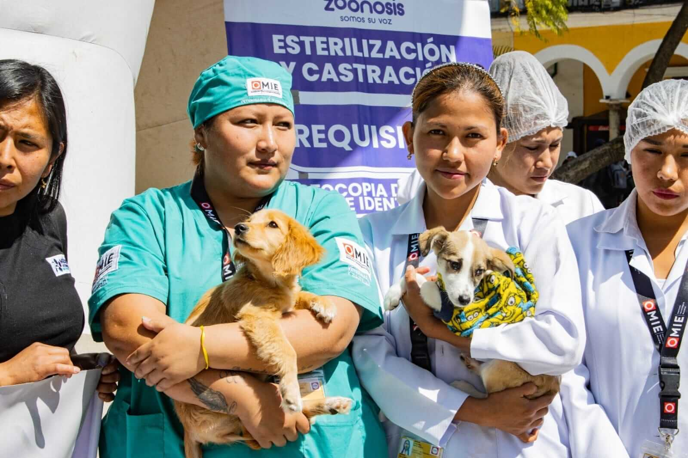

Prevención y vacunación
Organizamos campañas de vacunación antirrábica y otras acciones de salud animal en barrios, plazas y unidades educativas.
Centro Municipal de Atención Animal
Zoonosis Cochabamba trabaja en la prevención de enfermedades que pasan de animales a personas, con campañas de vacunación, esterilización y educación sobre tenencia responsable.
Jornadas gratuitas en barrios y unidades educativas.
Atención programada para perros y gatos.
Charlas sobre tenencia responsable y prevención de zoonosis.
Ilustraciones y fotografías de las campañas de Zoonosis Cochabamba.
Es la unidad municipal encargada de prevenir y controlar las enfermedades zoonóticas y promover la convivencia responsable entre personas y animales de compañía.
Organizamos campañas de vacunación antirrábica y otras acciones de salud animal en barrios, plazas y unidades educativas.
Apoyamos el control poblacional de perros y gatos para reducir el abandono y mejorar su calidad de vida.
Desarrollamos materiales y campañas como “Bajo el mismo cielo”, para enseñar cómo el clima también afecta a las mascotas.
Brindamos información sobre tenencia responsable, mordeduras, denuncias de maltrato y medidas de prevención.
En días de mucho sol pueden sufrir golpes de calor y deshidratación. En época de lluvia y frío aumenta el riesgo de hongos, parásitos y enfermedades respiratorias.
Época seca: hidrata, sombrea y evita las horas de mayor calor.
Época húmeda: seca, limpia charcos y abriga a tus mascotas.
Ver recomendaciones por épocaEste espacio muestra la ubicación del centro municipal y otros puntos de atención relacionados con las campañas vigentes.
Dirección referencial:
Zoonosis Cercado, municipio de Cochabamba (búscalo así en Google Maps).
Horario de atención:
Lunes a viernes · 08:00 a 16:00 (según programación oficial)
Para confirmar horarios y campañas móviles, revisa las redes oficiales o comunícate con el Gobierno Autónomo Municipal de Cochabamba.